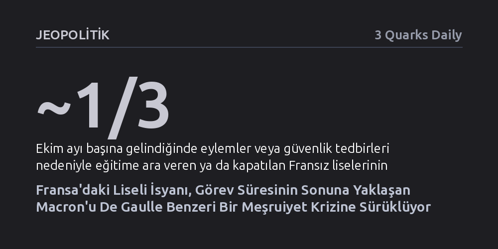

JEOPOLITIK · 3 Quarks Daily · 2026-10-26
Fransa'da personel yetersizliği gerekçesiyle liselerde başlayan ve hızla sendikalar ile üniversitelere yayılan eylemler, okulların üçte birini felç etti. Hükümetin sert polis müdahalesiyle bastırmaya çalıştığı bu dalga, görev süresinin sonundaki Emmanuel Macron yönetimini derin bir meşruiyet krizine sürüklüyor.
Fransa siyasi tarihinde gençlik hareketlerinin iktidarları sarsma gücünü hatırlatarak, bugün Macron'un kaderini de tıpkı 1968'de De Gaulle gibi liseli ve üniversitelilerin sokak isyanının belirleyebileceğini gösteriyor.

Eylül ayı ortasında Paris’in güneydoğu banliyölerindeki bir lisede patlak veren öğrenci ve öğretmen protestoları, Fransa'da kısa sürede ulusal ölçekte bir krizin fitilini ateşledi. Başlangıçta kronikleşen personel yetersizliği, aşırı kalabalık sınıflar ve eğitim binalarındaki fiziki şartların dayanılmaz hale gelmesine karşı yerel bir tepki olarak doğan hareket, haftalar içinde tüm ülkeye yayıldı. Ekim ayının başına gelindiğinde Fransa genelindeki liselerin yaklaşık üçte biri ya öğrencilerin boykotları nedeniyle fiilen durma noktasına geldi ya da olası çatışmaları engellemek amacıyla idare tarafından önleyici tedbir olarak kapatıldı.
Eylemler lise bahçeleriyle sınırlı kalmayarak hızla toplumsal bir koalisyona dönüştü. Öğrenci velileri, üniversite gençliği ve ülkenin önde gelen sendikaları liselilerin başlattığı direnişe güçlü bir destek verdi; gösteriler Fransa’nın tüm büyük şehirlerinin meydanlarına taşındı. Talepler okullardaki somut eksikliklerden genel bir yaşam standardı ve kamusal hizmet krizine doğru genişlerken, iktidarın bu yaygın öfkeye verdiği ilk ve en belirgin kurumsal yanıt ise sokakları polis gücüyle bastırmak oldu.
Fransa siyasi geçmişi, gençliğin doğrudan siyasete müdahale ederek devletin zirvesini sarstığı kırılma anlarıyla örülüdür. Charles de Gaulle liderliğindeki Özgür Fransa hareketi henüz halkın çok küçük bir azınlığından destek bulabiliyorken, Kasım 1940'ta binlerce cesur öğrencinin Zafer Takı altında toplanıp 'Vive de Gaulle' sloganlarıyla yürümesi Gaullizmin tarihsel meşruiyetinin kurucu adımı olmuştu. Gençler o gün, ulusal bir liderin ve siyasi hareketin doğuşunu müjdeleyen en dinamik güç konumundaydı.
Fakat aynı gençlik dinamiği, yaklaşık otuz yıl sonra bizzat yükselttiği Gaullist iktidarın da sonunu hazırladı. Mayıs 1968'de üniversitelerde başlayıp fabrikalara sıçrayan büyük öğrenci isyanı, De Gaulle'ün sarsılmaz görünen otoritesinde asla onarılamayan derin bir meşruiyet yarığı açtı. Efsanevi general o günlerde krizi yatıştırmış gibi görünse de toplumsal meşruiyetini bir daha asla geri kazanamadı ve bir yıl bile dolmadan girdiği referandumu kaybederek siyaset sahnesinden çekildi. Gençlik isyanı, Fransa'da en güçlü liderlerin bile otoritesini aşındırabilen belirleyici bir siyasi güç olduğunu kanıtladı.
Bugün Fransa, De Gaulle dönemini anımsatan yeni bir meşruiyet sınavıyla karşı karşıya bulunuyor. Görev süresinin son aylarına yaklaşan, meclis çoğunluğunu yitirmiş ve siyasi olarak kuşatılmış olan Emmanuel Macron yönetimi, liselerden yükselen bu yeni isyan dalgası karşısında ciddi bir kırılganlık sergiliyor. Gençlerin eğitim ve gelecek kaygısıyla başlattığı, sendikaların ve üniversitelerin katılımıyla büyüyen itiraz, iktidarın toplum nezdindeki temsil gücünü doğrudan hedef alıyor.
Hükümetin toplumsal huzursuzluğu diyalog yoluyla çözmek yerine kolluk kuvvetleri eliyle bastırma refleksi göstermesi, öfkeyi dindirmek yerine daha da körüklüyor. Fransız siyasetinin yazılı olmayan kuralı bir kez daha işliyor: Gençliğin kitlesel olarak karşısına aldığı ve sokakta meşruiyetini yitiren bir Fransız cumhurbaşkanının, kalan görev süresini sarsıntısız tamamlaması neredeyse imkansızdır. Macron, görev süresinin finalinde gençliğin açtığı bu derin meşruiyet kriziyle hesaplaşmak zorunda kalıyor.